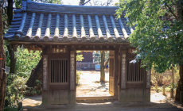
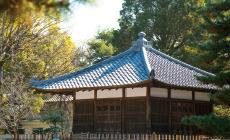

東洋大学創立者、井上円了の精神修養場として、明治37年に創設された哲学堂公園。
地域の人々に親しまれる都内でも有数の自然豊かな場所。
その美しい樹々の緑に包まれた、哲学の森を眼前に臨む生活。
地域の人々に親しまれる都内でも有数の自然豊かな場所。
その美しい樹々の緑に包まれた、哲学の森を眼前に臨む生活。
哲学堂公園
（徒歩1分／約20m）
17,000坪の広大な敷地を擁し、妙正寺川と一体となって四季折々の豊かな自然が楽しめる。園内には７７場の哲学に由来するユニークな名前の建物や石造物、通路などが点在。井上円了博士の哲学の思想と世界観を垣間見ながら、のんびり散策を楽しむことが出来ます。
-
- 
- 「哲理門」哲学堂の正門。右の柱には物質の世界の不思議を表す天狗像が、左の柱には精神の世界の不思議を表す幽霊像が配されています。
-
- 「六賢台」哲学堂のランドマーク的存在。朱色の美しい建物には、東洋の賢人として、聖徳太子、菅原道真、荘子、朱子、龍樹、迦毘羅の６人が祀られています。
-
- 
- 「四聖堂」哲学堂の中心的な建物。四面のいずれも正面とされ、孔子、釈迦、ソクラテス、カントを奉祀しています。堂内には釈迦涅槃像が安置されています。
-